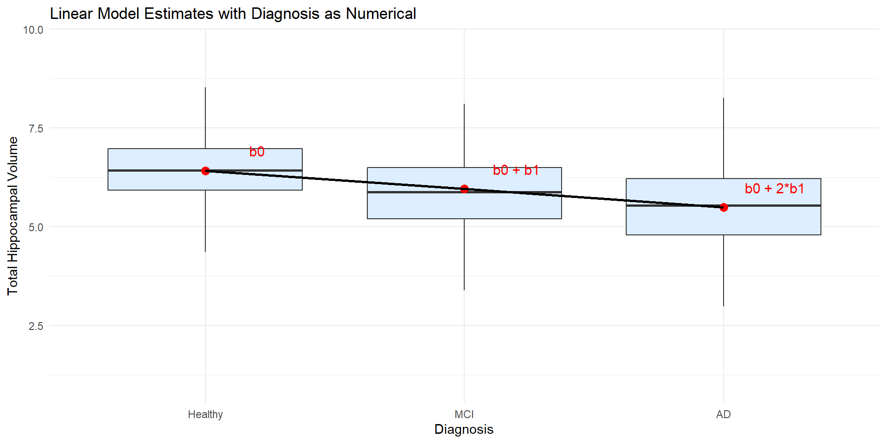
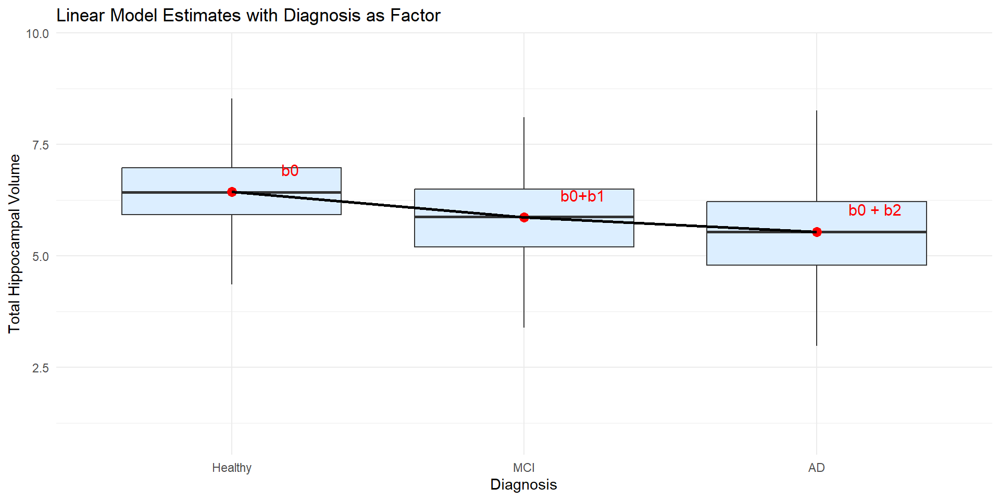
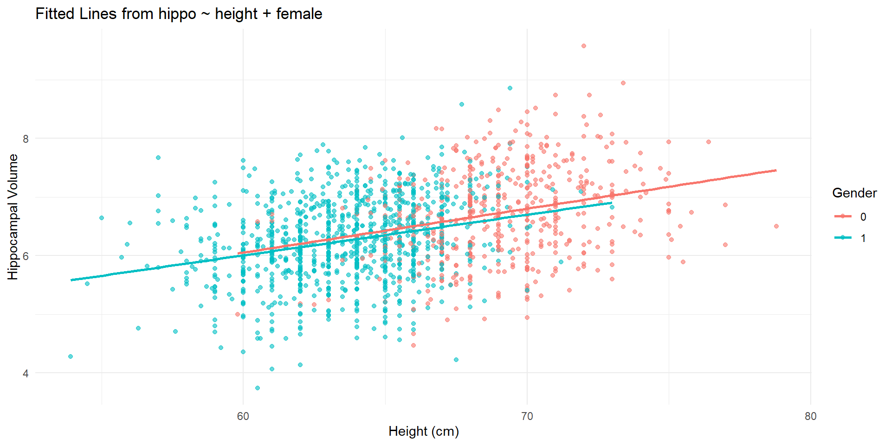

Question: Is hippocampal volume correlated with age in healthy adults?
We mentioned a correlation test, but we did not discuss the details the relationship between hippocampal volume and age.
Is linear appropriate for the whole age range? What about the age range of 45+?
How can be better understand the relationship between hippocampal volume and age? Correlation doesn’t provide an answer to this question. We need linear regression.
mathematically, it is the estimated hippocampal value for a person at age=0.
statistically, this interpretation involves extrapolation, which should be avoided. Rational:
The linear trend we observed is for healthy subjects who are 45 or older.
It is dangerous to assume that the same linear trend holds at around age 0.
Ex 1: The Slope
How to interpret \(b_1= - 0.029\)?
What if we increase age by 1 year?
Recall that the fitted line is \(hippo = 8.42 - 0.029 \times age\)
\(hippo_0 = 8.42 - 0.029 \times x\)
\(hippo_1 = 8.42 - 0.029 \times (x+1)\)
Therefore, \(hippo_1 - hippo_0 = -0.029\), which means that the estimated hippocampal volume decreases by 0.029 cc for each additional year of age.
When reporting an estimated slope, it is also important to report uncertainty, such as standard error, confidence interval, and p-value. See next five slides.
Residual sum of squares (RSS): \(RSS=\sum_{i=1}^n e_i^2 = \sum_{i=1}^n (y_i -\hat y_i)^2\)
An unbiased estimate of \(\sigma^2\) is \(s^2\): \[s^2= \frac{RSS}{n-2}\]
Standard Error and Confidence Interval
The standard error of \(\hat\beta_1\) is \[se(\hat \beta_1)=\frac{\sqrt{s^2}}{\sqrt{\sum (x_i - \bar{x})^2}}\]
A \(100(1-\alpha)\%\) confidence interval for \(\beta_1\) is \[\hat\beta_1 \pm t_{1-\alpha / 2, n - 2} se(\hat\beta_1)\]
Ex 1: SE and p-value
The estimated slope (\(b_1\)) is -0.029, its standard error is 0.001818, and the p-value is \(<2e-16\); the linear relationship is significant at level 0.05.
Code
summary(obj.age.hippo)$coefficients
Estimate Std. Error t value Pr(>|t|)
(Intercept) 8.42039161 0.126407343 66.61315 0.000000e+00
age -0.02908978 0.001817536 -16.00506 2.725429e-53
Ex 1: Confidence Interval
The estimated slope (\(b_1\)) is -0.029.
A 95% confidence interval is (-0.033, -0.026).
Code
confint(obj.age.hippo)
2.5 % 97.5 %
(Intercept) 8.17243458 8.66834865
age -0.03265501 -0.02552456
Estimation vs Prediction
Why are the answers to the following two questions different?
Question 1: What is the estimated mean hippocampal volume for 46-year-old women?
Two Sample t-test
data: hippo by female
t = 11.938, df = 1477, p-value < 2.2e-16
alternative hypothesis: true difference in means between group 0 and group 1 is not equal to 0
95 percent confidence interval:
0.4029661 0.5614304
sample estimates:
mean in group 0 mean in group 1
6.735692 6.253494
Categorical Variables in Linear Regression
Categorical variables can be included in linear regression models as factors.
Consider the dignosis variable in the alzheimer data, which has three levels: 0 (healthy), 1 (MCI), and 2 (AD).
What happens if we use it as a numeric variable (this might not be appropriate in many situations)
What happens if we use it as a categorical variable (this is the most appropriate way in this case).
Ex3: When mistakenly treating diagonosis as a numerical variable
When using the numerical coding, the model assumes a linear relationship between diagnosis and hippocampal volume:
It assumes that mean difference between MCI and healthy is the same as the mean difference between AD and MCI.
This might not be the most appropriate way.
Code
alzheimer_data <-read.csv("https://raw.githubusercontent.com/COSMOS-DataScience/slides/refs/heads/main/data/alzheimer_data.csv", head=T) %>%select(id, diagnosis, age, educ, female, height, weight, lhippo, rhippo) %>%# mutate(diagnosis = as.factor(diagnosis), female = as.factor(female), hippo=lhippo+rhippo)mutate(hippo=lhippo+rhippo)#Note that factor here was not treated as a categorical variable, it is treated a numerical variablesummary(lm(hippo ~ diagnosis, data=alzheimer_data))
Call:
lm(formula = hippo ~ diagnosis, data = alzheimer_data)
Residuals:
Min 1Q Median 3Q Max
-4.5296 -0.5940 -0.0046 0.5760 3.4734
Coefficients:
Estimate Std. Error t value Pr(>|t|)
(Intercept) 6.41399 0.02154 297.7 <2e-16 ***
diagnosis -0.46342 0.02106 -22.0 <2e-16 ***
---
Signif. codes: 0 '***' 0.001 '**' 0.01 '*' 0.05 '.' 0.1 ' ' 1
Residual standard error: 0.8761 on 2698 degrees of freedom
Multiple R-squared: 0.1522, Adjusted R-squared: 0.1518
F-statistic: 484.2 on 1 and 2698 DF, p-value: < 2.2e-16
Ex3: When mistakenly treating diagonosis as a numerical variable
Code
alzheimer_data <-read.csv("https://raw.githubusercontent.com/COSMOS-DataScience/slides/refs/heads/main/data/alzheimer_data.csv", head=T) %>%select(id, diagnosis, age, educ, female, height, weight, lhippo, rhippo) %>%mutate(female =as.factor(female), hippo = lhippo + rhippo)# Fit model treating diagnosis as factorfit <-lm(hippo ~ diagnosis, data = alzheimer_data)coefs <-coef(fit)# Model-based means for each groupmodel_means <-data.frame(diagnosis =c("Healthy", "MCI", "AD"),hippo =c(coefs[1], coefs[1] + coefs[2], coefs[1] +2*coefs[2]),label =c("b0", "b0 + b1", "b0 + 2*b1"))alzheimer_data <-mutate(alzheimer_data, diagnosis =factor(diagnosis, levels=c("0","1","2"), labels =c("Healthy", "MCI", "AD")))# Plotggplot(alzheimer_data, aes(x = diagnosis, y = hippo)) +geom_boxplot(fill ="#dceeff", outlier.shape =NA) +# Add model-predicted means and connect themgeom_point(data = model_means, aes(y = hippo), color ="red", size =3) +geom_line(data = model_means, aes( y = hippo, group =1), color ="black", linewidth =1) +# Label model meansgeom_text(data = model_means, aes(x=1:3+0.2,y = hippo +0.5, label = label), color ="red", size =4) +labs(x ="Diagnosis",y ="Total Hippocampal Volume",title ="Linear Model Estimates with Diagnosis as Numerical" ) +theme_minimal()

Use diagnosis as a Categorical Variables in Linear Regression
Instead, we can treat diagnosis as a categorical variable (factor).
R automatically does dummy coding to create two binary variables: one for MCI and one for AD, with healthy as the reference group.
In this example
The estimated intercept is the estimated mean for the reference group (healthy, diagnosis=1).
The two slopes are represent the estimated difference between each diagnosis group and the reference group (healthy).
Based on the following R output, the estimated mean for healthy is ( ), for MCI is ( ), and for AD is ( ).
Call:
lm(formula = hippo ~ diagnosis, data = alzheimer_data)
Residuals:
Min 1Q Median 3Q Max
-4.5797 -0.5862 -0.0074 0.5770 3.4233
Coefficients:
Estimate Std. Error t value Pr(>|t|)
(Intercept) 5.53731 0.03720 148.849 < 2e-16 ***
diagnosisHealthy 0.89476 0.04339 20.621 < 2e-16 ***
diagnosisMCI 0.32278 0.05131 6.291 3.66e-10 ***
---
Signif. codes: 0 '***' 0.001 '**' 0.01 '*' 0.05 '.' 0.1 ' ' 1
Residual standard error: 0.8748 on 2697 degrees of freedom
Multiple R-squared: 0.155, Adjusted R-squared: 0.1544
F-statistic: 247.3 on 2 and 2697 DF, p-value: < 2.2e-16
Ex3: Coefficients and Group Means

Linear Regression and ANOVA
For a binary X (Ex2), linear regression can perform a two-sample t-test (equal variance).
In a categorical X (Ex3), a Linear regression provides information about the means.
If we would like to test whether the categorical variable diagnosis is associated with hippo, we can use either linear regression or analysis of variance (ANOVA).
ANOVA is to examine whether the means of different groups are equal. In this case, we want to test whether the mean hippocampal volume is the same for healthy, MCI, and AD groups.
Conduct ANOVA Using Linear Regression
Two ways to preform ANOVA using linear regression:
Using the lm function to fit the model and then using
After adjusting for height, women have an estimated hippocampal volume that is 0.087 units lower than men (SE = 0.054; 95% CI: −0.193 to 0.019; P = 0.106), although this difference is not statistically significant.
Interpret the Coefficients
Interpretation: Similarly, the slope 0.071 is the estimated increase in hippocampal volume for each in increase in height, holding gender constant.
Recall that the fitted model is
\[y=1.805 + 0.071 *height - 0.087 *female\]
If we do not change female but increase height by 1 unit, the estimated increase in hippocampal volume is 0.071 cc.
After adjusting for sex, each additional in of height is associated with an estimated increase of 0.071 units in hippocampal volume (SE = 0.0068; 95% CI: 0.058 to 0.085; P < 0.001).
When not Forcing Equal Slopes
The two lines are nearly parallel, which is consistent with the model we fit.
Code
ggplot(alzheimer_healthy_old, aes(x = height, y = hippo, color = female)) +geom_point(alpha =0.6) +geom_smooth(method ="lm", se =FALSE) +labs(x ="Height (cm)",y ="Hippocampal Volume",color ="Gender",title ="Fitted Lines from hippo ~ height + female" ) +theme_minimal()

Model Diagnostics and Outliers
The typical assumptions of linear regression models are
Linearity
Independent observations
Constant variance and normality of the error term (residuals)
The first two assumptions are usually justified by our domain knowledge, our study design, and simple visualization of data.
To investigate the validity of the third assumptions we can use diagnostic plots by visualizing the residuals
Outliers are points that do not follow the general pattern of the majority of the data. Visualization methods are often used.
The two fitted lines in Ex4 are parallel to each other.
This is because hippo ~ height + female implies an additive effect between gender and height. In other words, the effect of height does not depend on gender.
When suspecting that the effect of one explanatory variable on the response may depend on another explanatory variable, we can include an interaction term in the model.
Ex 5: The Joint Effects of Age and Gender on Hippocampal Volume
In this example, we will examine how age and gender jointly affect hippocampal volume.
In particular, we will assess whether the effect of age on hippocampal volume may depend on gender.
Ex 5: Two Separate Lines
If we fit two separate lines, do they seem to have the same slope?
Estimate Std. Error t value Pr(>|t|)
(Intercept) 9.182369560 0.210806589 43.558266 3.789072e-267
age -0.035269930 0.003008468 -11.723553 2.059224e-30
female1 -1.041026159 0.255296507 -4.077714 4.790840e-05
age:female1 0.007708627 0.003656786 2.108034 3.519639e-02
The difference in brain shrinking speed between men and women is 0.0077cc per year with SE=0.004. The difference is is statistically significant at significance level 0.05.
Interpret Interactions
The estimated brain shrinking speed for men is 0.035cc per year.
The estimated brain shrinking speed for women is \(|-0.035+0.0077|\approx 0.0273\)cc per year.
Advanced Topic 2: Transform \(X\) and \(Y\)
Transform \(X\)
Weight is a little bit skewed. Regress hippocampus volume on log(weight). How to interpret the results?